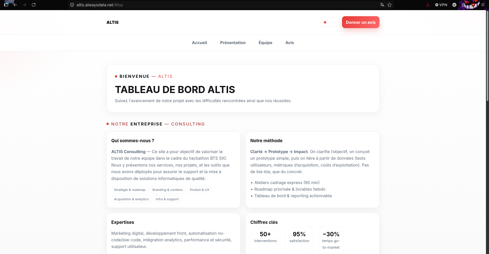
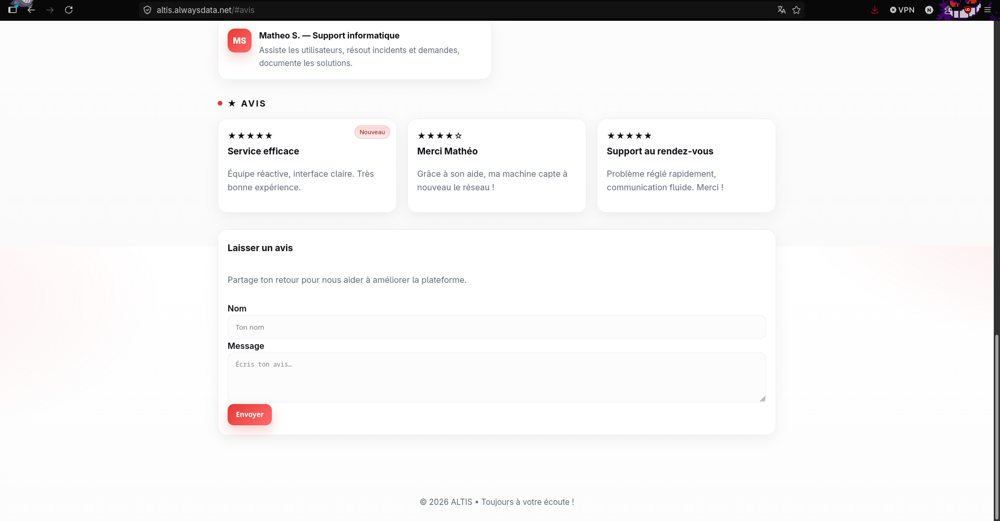

Déploiement de services informatiques
Réalisation professionnelle
Mise à disposition de plusieurs services informatiques dans le cadre d’un projet hackathon : un outil GLPI pour le suivi des demandes et un site web ALTIS accessible en ligne.
Compétence mise en œuvre
C17 - Mettre à disposition des utilisateurs un service informatique.
Contexte
Dans le cadre d’un projet réalisé en formation à l’EFREI, nous avons travaillé sur une entreprise fictive appelée ALTIS. L’objectif était de créer des services utilisables par les membres de l’équipe et par des utilisateurs externes.
Deux services principaux ont été mis à disposition : GLPI pour centraliser les demandes et incidents, ainsi qu’un site web public permettant de présenter l’entreprise et de recueillir des avis utilisateurs.
Démarche suivie
1. Mise à disposition de GLPI
GLPI a été utilisé afin de centraliser les demandes et les incidents rencontrés pendant le projet. L’outil était accessible via une interface web et permettait aux membres de l’équipe de consulter les informations liées au parc, aux utilisateurs et aux tickets.
2. Déploiement du site ALTIS
Une landing page a été développée pour représenter l’entreprise fictive ALTIS et présenter son activité. Le site a été mis en ligne sur Alwaysdata afin d’être accessible depuis un navigateur web.
3. Ajout d’un formulaire d’avis
Une section “Avis” a été intégrée au site afin de permettre aux utilisateurs de laisser un retour. Cette fonctionnalité permet de rendre le service plus interactif et d’ajouter une dimension utilisateur au projet.
4. Vérification du fonctionnement
Après la mise en ligne, nous avons vérifié que le site était accessible, que les différentes sections fonctionnaient et que les utilisateurs pouvaient accéder au formulaire d’avis.
Captures et preuves
Les captures ci-dessous montrent les services mis à disposition : GLPI accessible, le site ALTIS en ligne et le formulaire d’avis disponible pour les utilisateurs.



Conclusion
Cette réalisation m’a permis de comprendre l’importance de rendre un service informatique accessible et utilisable. Le déploiement de GLPI et du site ALTIS montre la capacité à passer d’un travail local ou interne à une solution disponible pour des utilisateurs. Cette compétence est essentielle pour assurer la mise en production et le bon fonctionnement d’un service.